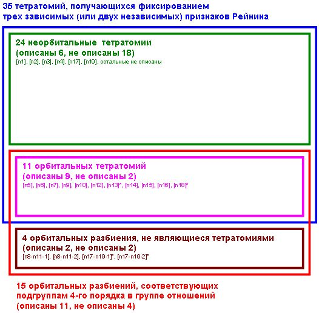

На главную
Определение и классификация малых групп в
соционике
Александр Касюков (kasiuka@sunysuffolk.edu),
Светлана Макарчева (wybor@mail.ru)
Опубликовано
по адресу
http://www2.sunysuffolk.edu/kasiuka/socionics/html/small-groups.html
В этой статье проведено систематическое изучение
малых групп соционики с точки зрения их
взаимодействия с группой соционических отношений.
В рамках этого рассмотрения введена новая
категория малых групп — факторизационные малые группы. Kроме того,
для справки приведена стандартная информация о
соответствии между признаками Рейнина и всеми
возможными малыми группами, а также таблица сложения дихотомий Рейнина.
Определение. Рассмотрим
произвольную подгруппу M в группе дихотомий Рейнина. Назовём два ТИМа
эквивалентными относительно подгруппы M, если
у них одинаковы все признаки
Рейнина всех дихотомий из M. Таким образом,
любая подгруппа M группы дихотомий Рейнина
задаёт разбиение ТИМов на классы
эквивалентности.
Если подгруппа M порождается двумя неравными
друг другу дихотомиями Рейнина, то такая
подгруппа изоморфна Z/2Z + Z/2Z и состоит из
четырёх дихотомий, одна из которых вырождена (т.е.
является нулевым элементом в группе дихотомий
Рейнина). В этом случае группа M задаёт
разбиение ТИМов на 4 класса эквивалентности по 4
ТИМа в каждом таком классе. Соответствующее такой
группе разбиение будет называться классы
эквивалентности этого разбиения — малыми группами данной тетратомии,
а определяющую разбиение подгруппу M — групповым инвариантом тетратомии.
Если две образующие M можно выбрать среди
дихотомий Юнга, то
определяемая по M тетратомия имеет смысл не
только для соционики, но и для MBTI.
Следует заметить, что сам термин "малая
группа" довольно неудачен, так как входит в
противоречие с математической терминологией, не
определяя группу в математическом смысле слова.
Принимая во внимание тот факт, что в соционике
рассматриваются (математические) группы — группа
соционических отношений и группа дихотомий
Рейнина — такое смешение смыслов нежелательно.
Сквозная нумерация малых групп [R...] следует введённой Рейниным в [1].
В этом разделе мы перечислим малые группы, уже
рассматривавшиеся в соционике, и опишем два новых
примера обладающих одним Следует заметить, что данное выше
определение отлично от традиционных способов
характеризации малых групп. Обычно их построение
основывалось на одном из следующих принципов.
Во-первых, ТИМы объединялись в одну малую группу на
основе совпадения определённых соционических
характеристик. Такой подход обычно уделял больше
внимания взаимозаменяемости эквивалентных ТИМов
при решении соответствующих классов задач, нежели
характеру взаимодействия внутри такого
объединения. Этот подход можно считать взглядом на
малую группу со стороны "внешнего наблюдателя".
Во-вторых, рассматривались замкнутые структурные
единицы в рамках социона, характеризующиеся
устойчивыми паттернами взаимоотношений внутри
такой единицы. Иначе говоря, объединение ТИМов в
одну малую группу проводилось по связывающим их
соционическим отношениям. Этот подход
рассматривает малую группу с точки зрения её
внутреннего устройства.
В качестве общих соционических характеристик
членов малой группы часто рассматривались пары
дихотомии Юнга. (При этом третья нетривиальная
дихотомия Рейнина в групповом инварианте
соответствующей малым группам тетратомии есть
сумма этих двух дихотомий Юнга.) Так, в числе
прочих, получаются следующие тетратомии:
[R20] Стимульные группы (картинки) —
классификация по типу мотивации
источник: В. Гуленко "Менеджмент слаженной команды", 1995
Общие невырожденные дихотомии Рейнина:
- 'экстраверт <-> интроверт'
- 'интуит <-> сенсор'
- 'беспечный <-> предусмотрительный'
Названия групп
по картам Таро (картинки) даны Удаловой в работе
[5]
- предусмотрительный & сенсор & экстраверт =
престиж = король = ( 'Наполеон', 'Жуков', 'Штирлиц', 'Гюго' )
- беспечный & сенсор & интроверт =
благосостояние = дама = ( 'Максим', 'Дюма', 'Габен',
'Драйзер' )
- беспечный & интуит & экстраверт =
уникальность = рыцарь = ( 'Гексли', 'Джек', 'Гамлет',
'Дон-Кихот' )
- предусмотрительный & интуит & интроверт =
самоценность = паж = ( 'Достоевский', 'Робеспьер',
'Есенин', 'Бальзак' )
[R24] Группы коммуникабельности
источник: В. Гуленко "Менеджмент слаженной команды", 1995
Общие невырожденные дихотомии Рейнина:
- 'логик <-> этик'
- 'уступчивый <-> упрямый'
- 'экстраверт <-> интроверт'
Названия групп:
- упрямый & логик & интроверт = хладнокровный
= ( 'Габен', 'Робеспьер', 'Максим', 'Бальзак' )
- уступчивый & этик & интроверт = душевный = (
'Достоевский', 'Дюма', 'Есенин', 'Драйзер' )
- уступчивый & логик & экстраверт = деловой = (
'Жуков', 'Джек', 'Штирлиц', 'Дон-Кихот' )
- упрямый & этик & экстраверт = страстный = (
'Наполеон', 'Гамлет', 'Гексли', 'Гюго' )
Иногда вместо дихотомий Рейнина использовались
соционические характеристики хотя и сводимые к
ним, но получаемые более простым способом
непосредственно из модели А. Например, некоторые
принципы разбиения определялись по аспектам ТИМов
в блоке ЭГО. При таком подходе к классификации,
соответствующие дихотомии Рейнина для группового
инварианта обнаруживаются пост-фактум.
[R15] Группы мировоззрения (или группы "гендерных установок") —
классификация по иррациональному аспекту в блоке
ЭГО
Общие невырожденные дихотомии Рейнина:
- 'интуит <-> сенсор'
- 'статик <-> динамик'
- 'рассудительный <-> решительный'
Названия групп:
- рассудительный & статик & интуит =
инфантил, ребёнок, проницательный (интуиция
возможностей) = ( 'Дон-Кихот', 'Гексли', 'Робеспьер',
'Достоевский')
- решительный & динамик & интуит = виктим,
жертва, своевременный (интуиция времени) = (
'Бальзак', 'Есенин', 'Джек', 'Гамлет')
- решительный & статик & сенсор = агрессор,
охотник, контролёр территории (волевая
сенсорика) = ( 'Жуков', 'Наполеон', 'Максим',
'Драйзер' )
- рассудительный & динамик & сенсор =
заботливый, родитель, освоитель территории
(сенсорика ощущений) = ( 'Габен', 'Дюма', 'Штирлиц',
'Гюго' )
[R9] Группы образа действия —
классификация по рациональному аспекту в блоке
ЭГО
Общие невырожденные дихотомии Рейнина:
- 'логик <-> этик'
- 'статик <-> динамик'
- 'веселый <-> серьезный'
Названия групп:
- веселый & статик & логик = концептуалист
(структурная логика) = ( 'Максим', 'Жуков',
'Дон-Кихот', 'Робеспьер' )
- серьезный & динамик & логик = методолог
(деловая логика) = ( 'Штирлиц', 'Бальзак', 'Джек',
'Габен' )
- серьезный & статик & этик = гармонизатор
(этика отношений) = ( 'Наполеон', 'Гексли', 'Драйзер',
'Достоевский' )
- веселый & динамик & этик = вдохновитель
(этика эмоций) = ( 'Есенин', 'Гамлет', 'Гюго', 'Дюма' )
Напомним, что вся группа
соционических отношений R эффективно и
транзитивно действует на T. Иначе говоря,
множество T является главным
однородным пространством группы R.
Для нахождения устойчивых структур внутри
социона, замкнутых относительно соционических
отношений входящих в них ТИМов, можно
воспользоваться этим действием группы отношений
на множестве всех соционических ТИМов. Подгруппы
группы отношений определяют разбиения множества
ТИМов на орбиты своего действия.
Определение. Допустим G —
некоторая подгруппа группы соционических
отношений R. Рассмотрим действие группы G
на множестве всех соционических ТИМов T,
являющееся ограничением стандартного действия
всей группы R на множестве T. Действие G
разбивает T на орбиты, т.е. множества ТИМов из
T, которые переводятся друг в друга действием
некоторого элемента из G.
Используя стандартную математическую терминологию, мы будем называть
такое разбиение множества T факторизацией по действию группы
G, соответствующую разбиению группу G —
факторизующей группой
разбиения, а каждый класс эквивалентности разбиения — орбитой.
В соционическом контексте мы будем использовать термин
факторизационная малая группа для обозначения
такого разбиения.
Факториазции по действию групп выделяются среди
всех разбиений тем, что
- все их классы эквивалентности замкнуты
относительно отношений входящих в них ТИМов
- различные классы эквивалентности имеют одни и
те же отношения между входящими в них ТИМами
Если мы отбросим второе условие, то получим более
широкий класс разбиений, определяемый ниже.
Определение. Произвольное
разбиение множества всех ТИМов T называется
орбитальным, если для каждого
класса эквивалентности этого разбиения
существует подгруппа G в группе всех
соционических отношений R, орбитой действия
которой и является данный класс эквивалентности.
Каждый класс эквивалентности орбитального
разбиения будет называться орбитой, а соответствующая орбите
подгруппа G — группой
отношений данной орбиты.
Различные орбиты одного и того же орбитального
разбиения вполне могут иметь различные группы
отношений. Если же все эти группы отношений
совпадают, то данное орбитальное разбиение
является факторизацией по действию
соответствующей орбитам группы отношений. В
частности, каждая факторизация по действию группы
является орбитальным разбиением, но обратное
неверно. Факторизующая группа
разбиения — это в точности то же самое, что и общая
для всех орбит данного разбиения группа отношений.
Орбитальные разбиения — это то же самое понятие,
которое ввёл Григорий Рейнин в [1] под
термином "однородные" или "гомогенные" малые
группы, хотя его определение было несколько
другим.
Все рассматривавшиеся выше тетратомии не являются
орбитальными, потому что не замкнуты относительно отношений
входящих в них ТИМов.
С этого момента мы переходим к рассмотрению разбиений, являющихся
факторизацией по действию некоторой группы.
Это подводит нас изучению подгрупп
G в группе соционических отношений R.
Поскольку действие всей группы отношений R на
множестве ТИМов T эффективно, все орбиты
действия любой подгруппы G в группе R имеют
то же самое число элементов, что и сама подгруппа
G. Поэтому факторизация по действию группы
может делить ТИМы на
- одно множество из шестнадцати элементов
(вырожденный случай, соответствующий ситуации G =
R)
- два множества по восемь элементов
- четыре множества по четыре элемента
- восемь множеств по два элемента
- шестнадцать множеств по одному элементу
(вырожденный случай, соответствующий тривиальной
группе G)
Нам особенно интересен третий случай. Когда в
группе отношений G четыре элемента,
соответствующие орбиты делят ТИМы на четыре
множества по четыре элемента в каждом. Это
совпадает с рассмотренными выше тетратомиями по
своим комбинаторным параметрам и поэтому мы можем
задаться вопросом о связи тетратомий с
орбитальными разбиениями такого типа. Все ли
тетратомии получаются как факторизации или как
орбитальные разбиения? Все ли орбитальные
разбиения (с группами отношений из четырёх
элементов) получаются как тетратомии? Оказывается,
что ответы на оба вопроса отрицательные, и поэтому
совместное рассмотрение тетратомий и орбитальных
разбиений позволяет расширить список допустимых
малых групп.
Определение. Тетратомия, которая
является факторизацией множества ТИМов по
действию некоторой подгруппы G в группе R
всех соционических отношений, называется факторизационной тетратомией.
Тетратомия, которая является орбитальным
разбиением ТИМов называется орбитальной тетратомией.
Какую структуру могут иметь подгруппы из четырёх
элементов? Напомним, что группа
R является прямым произведением группы диэдра
4-го порядка D4 (из 8 элементов) и Z/2Z —
группы вычетов по модулю 2 (из двух элементов).
Поэтому все 4-х элементные подгруппы R
изоморфны либо циклической группе Z/4Z, либо
группе Z/2Z + Z/2Z.
Простейшие подгруппы получаются, если взять
циклическую подгруппу группы R, порождённую
одним единственным элементом этой группы. Лишь
немногие циклические группы имеют четыре
элемента, однако мы рассмотрим все возможные
циклические группы для полноты картины.
Отношение 'тождик' порождает тривиальную
циклическую группу из одного единственного
элемента. Факторизация по действию этой группы —
это вырожденное разбиение социона на отдельные
ТИМы.
Симметричные соционические отношения порождают 11
подгрупп из 2 элементов, изоморфных Z/2Z:
- ( 'тождик', 'дуал' )
- ( 'тождик', 'активатор' )
- ( 'тождик', 'зеркальщик' )
- ( 'тождик', 'деловик' )
- ( 'тождик', 'миражник' )
- ( 'тождик', 'суперэго' )
- ( 'тождик', 'противоположник' )
- ( 'тождик', 'квазитождик' )
- ( 'тождик', 'конфликтёр' )
- ( 'тождик', 'родственник' )
- ( 'тождик', 'полудуал' )
Эти 11 подгрупп разбивают своим действием весь
социон на пары ТИМов, находящихся в
соответствующих симметричных отношениях. Вместе с
предыдущим тривиальным разбиением это даёт 12
разбиений, однако все они имеют больше чем 4 класса
и потому не являются тетратомиями.
Несимметричные соционические отношения порождают
две группы из 4 элементов, изоморфные Z/4Z. Так
определяются единственные две факторизационные
тетратомии, соответствующие циклическим группам.
[R32] Кольца заказа
источник: Ф. Я. Шехтер, Л.Н. Кобринская, 1991, "Малые группы в соционике"
Факторизация по действию группы ( 'тождик', 'заказчик', 'суперэго', 'подзаказный' )
Общие невырожденные дихотомии Рейнина:
- 'экстраверт <-> интроверт'
- 'процессуал <-> результатёр'
- 'квестим <-> деклатим'
Названия групп:
- деклатим & процессуал & интроверт =
инфонакопитель = ( 'Дюма', 'Максим', 'Бальзак',
'Достоевский' )
- деклатим & результатёр & экстраверт =
знергоноситель = ( 'Гюго', 'Гексли', 'Жуков', 'Джек' )
- квестим & процессуал & экстраверт =
энергогенератор = ( 'Гамлет', 'Штирлиц', 'Наполеон',
'Дон-Кихот' )
- квестим & результатёр & интроверт =
инфогенератор = ( 'Робеспьер', 'Есенин', 'Драйзер',
'Габен' )
[R33] Кольца ревизии
источник: Ф. Я. Шехтер, Л.Н. Кобринская, 1991, "Малые группы в соционике" (кольца контроля?)
Факторизация по действию группы ( 'тождик', 'ревизор', 'суперэго', 'подревизный' )
Общие невырожденные дихотомии Рейнина:
- 'статик <-> динамик'
- 'процессуал <-> результатёр'
- 'позитивист <-> негативист'
источник: В. Гуленко "Менеджмент слаженной команды", 1995
Названия групп даны в работе Гуленко
[4]
- негативист & процессуал & динамик = диалектико-алгоритмический стиль мышления = (
'Гамлет', 'Дюма', 'Бальзак', 'Штирлиц' )
- негативист & результатёр & статик = голографический стиль мышления = (
'Робеспьер', 'Гексли', 'Драйзер', 'Жуков' )
- позитивист & процессуал & статик = причинно-следственный стиль мышления = (
'Достоевский', 'Дон-Кихот', 'Наполеон', 'Максим' )
- позитивист & результатёр & динамик = вихревой стиль мышления = (
'Джек', 'Гюго', 'Есенин', 'Габен' )
Следующий уровень сложности — рассмотрение
подгрупп, изоморфных Z/2Z + Z/2Z. Для их построения
нужно взять любые два коммутирующих элемента
второго порядка. При этом получаются следующие
подгруппы:
[R1] Квадры
источник: Аушра Аугустинавичюте, "Теория признаков Рейнина", 1985 г.
Факторизация по действию группы ( 'тождик', 'дуал', 'активатор', 'зеркальщик' )
Общие невырожденные дихотомии Рейнина (т.е.
"квадральные признаки"):
- 'веселый <-> серьезный'
- 'демократ <-> аристократ'
- 'рассудительный <-> решительный'
Названия групп:
- рассудительный & весёлый & демократ = альфа
= ( 'Дон-Кихот', 'Дюма', 'Гюго', 'Робеспьер' )
- решительный & весёлый & аристократ = бета = (
'Жуков', 'Есенин', 'Гамлет', 'Максим' )
- решительный & серьёзный & демократ = гамма =
( 'Джек', 'Драйзер', 'Наполеон', 'Бальзак' )
- рассудительный & серьёзный & аристократ =
дельта = ( 'Штирлиц', 'Достоевский', 'Гексли', 'Габен'
)
[R13] САМ ПРИНЦИП РАЗБИЕНИЯ ЖДЁТ
СВОЕГО НАЗВАНИЯ именно это назвать "Деловым
квадратом".)
Эта тетратомия орбитальна, но не является
факторизацией по действию какой-то одной группы.
Первые две орбиты имеют ( 'тождик', 'дуал',
'родственник', 'полудуал' ) в качестве группы
отношений, а две последние — ( 'тождик', 'дуал',
'миражник', 'деловик' ). Смешивая орбиты этого
разбиения с орбитами из
[R19], можно
получить две факторизации (не являющиеся
тетратомиями),
[R13-R19-1] и
[R13-R19-2].
Общие невырожденные дихотомии Рейнина:
- 'иррационал <-> рационал'
- 'уступчивый <-> упрямый'
- 'веселый <-> серьезный'
Названия групп: ЖДУТ СВОЕГО ОПРЕДЕЛЕНИЯ
- веселый & упрямый & рационал = ( 'Робеспьер',
'Максим', 'Гюго', 'Гамлет' )
- серьезный & уступчивый & рационал = (
'Штирлиц', 'Драйзер', 'Достоевский', 'Джек' )
- веселый & уступчивый & иррационал = (
'Дон-Кихот', 'Есенин', 'Жуков', 'Дюма' )
- серьезный & упрямый & иррационал = (
'Наполеон', 'Гексли', 'Габен', 'Бальзак' )
[R3] Группы блокировки
(или группы "погашения", "группы сгрессоустойчивости" -
рассматривались Рейниным и проработаны с Аушрой)
Факторизация по действию группы ( 'тождик', 'дуал', 'суперэго', 'противоположник' )
Общие невырожденные дихотомии Рейнина:
- 'иррационал <-> рационал'
- 'демократ <-> аристократ'
- 'процессуал <-> результатёр'
Названия групп: ЖДУТ СВОЕГО ОПРЕДЕЛЕНИЯ
- процессуал & аристократ & рационал = (
'Достоевский', 'Штирлиц', 'Максим', 'Гамлет' )
- процессуал & демократ & иррационал = (
'Дон-Кихот', 'Дюма', 'Бальзак', 'Наполеон' )
- результатёр & аристократ & иррационал = (
'Есенин', 'Гексли', 'Габен', 'Жуков' )
- результатёр & демократ & рационал = (
'Робеспьер', 'Гюго', 'Джек', 'Драйзер' )
[R2] Группы мобилизации
источник: Ф. Я. Шехтер, Л.Н. Кобринская, 1991, "Малые группы в соционике"
Факторизация по действию группы ( 'тождик', 'дуал', 'квазитождик', 'конфликтёр' )
Общие невырожденные дихотомии Рейнина:
- 'уступчивый <-> упрямый'
- 'беспечный <-> предусмотрительный'
- 'демократ <-> аристократ'
Названия групп: ЖДУТ СВОЕГО ОПРЕДЕЛЕНИЯ
- аристократ & беспечный & упрямый = (
'Гамлет', 'Габен', 'Гексли', 'Максим' )
- аристократ & предусмотрительный &
уступчивый = ( 'Достоевский', 'Жуков', 'Есенин',
'Штирлиц' )
- демократ & беспечный & уступчивый = ( 'Дюма',
'Дон-Кихот', 'Джек', 'Драйзер' )
- демократ & предусмотрительный & упрямый = (
'Гюго', 'Робеспьер', 'Наполеон', 'Бальзак' )
[R19] САМ ПРИНЦИП РАЗБИЕНИЯ ЖДЁТ
СВОЕГО НАЗВАНИЯ
именно это называют "Квадратом".)
Эта тетратомия орбитальна, но не является
факторизацией по действию какой-то одной группы.
Первые две орбиты имеют ( 'тождик', 'дуал',
'родственник', 'полудуал' ) в качестве группы
отношений, а две последние — ( 'тождик', 'дуал',
'миражник', 'деловик' ). Смешивая орбиты этого
разбиения с орбитами из
[R13], можно
получить две факторизации (не являющиеся
тетратомиями),
[R13-R19-1] и
[R13-R19-2].
Общие невырожденные дихотомии Рейнина:
- 'иррационал <-> рационал'
- 'беспечный <-> предусмотрительный'
- 'рассудительный <-> решительный'
Названия групп: ЖДУТ СВОЕГО ОПРЕДЕЛЕНИЯ
- решительный & предусмотрительный &
иррационал = ( 'Есенин', 'Жуков', 'Бальзак',
'Наполеон' )
- рассудительный & беспечный & иррационал = (
'Дон-Кихот', 'Габен', 'Дюма', 'Гексли' )
- решительный & беспечный & рационал = (
'Драйзер', 'Джек', 'Максим', 'Гамлет' )
- рассудительный & предусмотрительный &
рационал = ( 'Гюго', 'Достоевский', 'Штирлиц',
'Робеспьер' )
[R13-R19-1] Деловые квадраты
Факторизация по действию группы ( 'тождик', 'дуал', 'деловик', 'миражник' )
Эта факторизация не является тетратомией:
единственная общая невырожденная дихотомия
Рейнина 'иррационал <-> рационал'.
Названия групп: ЖДУТ СВОЕГО ОПРЕДЕЛЕНИЯ
- ( 'Драйзер', 'Джек', 'Максим', 'Гамлет' )
также является орбитой в [R19]
- ( 'Гюго', 'Достоевский', 'Штирлиц', 'Робеспьер' )
также является орбитой в [R19]
- ( 'Дон-Кихот', 'Есенин', 'Жуков', 'Дюма' )
также является орбитой в [R13]
- ( 'Наполеон', 'Гексли', 'Габен', 'Бальзак' )
также является орбитой в [R13]
[R13-R19-2] Квадраты
Факторизация по действию группы ( 'тождик', 'дуал', 'родственник', 'полудуал' )
Эта факторизация не является тетратомией:
единственная общая невырожденная дихотомия
Рейнина 'иррационал <-> рационал'.
Названия групп: ЖДУТ СВОЕГО ОПРЕДЕЛЕНИЯ
- ( 'Есенин', 'Жуков', 'Бальзак', 'Наполеон' )
также является орбитой в [R19]
- ( 'Дон-Кихот', 'Габен', 'Дюма', 'Гексли' )
также является орбитой в [R19]
- ( 'Робеспьер', 'Максим', 'Гюго', 'Гамлет' )
также является орбитой в [R13]
- ( 'Штирлиц', 'Драйзер', 'Достоевский', 'Джек' )
[R13]
[R6] Группы двойной активации
Факторизация по действию группы ( 'тождик', 'активатор', 'суперэго', 'квазитождик' )
Общие невырожденные дихотомии Рейнина:
- 'экстраверт <-> интроверт'
- 'демократ <-> аристократ'
- 'позитивист <-> негативист'
Названия групп: ЖДУТ СВОЕГО ОПРЕДЕЛЕНИЯ
- негативист & аристократ & экстраверт = (
'Гамлет', 'Штирлиц', 'Гексли', 'Жуков' )
- негативист & демократ & интроверт = (
'Бальзак', 'Дюма', 'Драйзер', 'Робеспьер' )
- позитивист & аристократ & интроверт = (
'Максим', 'Есенин', 'Габен', 'Достоевский' )
- позитивист & демократ & экстраверт = (
'Наполеон', 'Гюго', 'Джек', 'Дон-Кихот' )
[R4] САМ ПРИНЦИП РАЗБИЕНИЯ ЖДЁТ
СВОЕГО НАЗВАНИЯ
Факторизация по действию группы ( 'тождик', 'активатор', 'противоположник', 'конфликтёр' )
Общие невырожденные дихотомии Рейнина:
- 'конструктивист <-> эмотивист'
- 'тактик <-> стратег'
- 'демократ <-> аристократ'
Названия групп: ЖДУТ СВОЕГО ОПРЕДЕЛЕНИЯ
- демократ & стратег & эмотивист = (
'Робеспьер', 'Дюма', 'Джек', 'Наполеон' )
- демократ & тактик & конструктивист = (
'Гюго', 'Дон-Кихот', 'Драйзер', 'Бальзак' )
- аристократ & стратег & конструктивист = (
'Гамлет', 'Жуков', 'Достоевский', 'Габен' )
- аристократ & тактик & эмотивист = ( 'Максим',
'Есенин', 'Штирлиц', 'Гексли' )
[R7] Лабиринты
Факторизация по действию группы ( 'тождик', 'зеркальщик', 'суперэго', 'конфликтёр' )
Общие невырожденные дихотомии Рейнина:
- 'статик <-> динамик'
- 'демократ <-> аристократ'
- 'квестим <-> деклатим'
Названия групп: ЖДУТ СВОЕГО ОПРЕДЕЛЕНИЯ
- деклатим & аристократ & статик = ( 'Жуков',
'Гексли', 'Максим', 'Достоевский' )
- деклатим & демократ & динамик = ( 'Джек',
'Гюго', 'Дюма', 'Бальзак' )
- квестим & аристократ & динамик = ( 'Габен',
'Штирлиц', 'Есенин', 'Гамлет' )
- квестим & демократ & статик = ( 'Наполеон',
'Робеспьер', 'Драйзер', 'Дон-Кихот' )
[R5] Клубы — классификация по
роду деятельности
источник: Аушра Аугустинавичюте, "Теория признаков Рейнина", 1985 г.,
В. Гуленко "Менеджмент слаженной команды", 1995
Факторизация по действию группы ( 'тождик', 'зеркальщик', 'противоположник', 'квазитождик' )
Общие невырожденные дихотомии Рейнина:
- 'демократ <-> аристократ'
- 'интуит <-> сенсор'
- 'логик <-> этик'
Названия групп:
- аристократ & сенсор & логик = практик = (
'Габен', 'Штирлиц', 'Жуков', 'Максим' )
- демократ & сенсор & этик = социал = (
'Драйзер', 'Наполеон', 'Гюго', 'Дюма' )
- демократ & интуит & логик = исследователь = (
'Робеспьер', 'Бальзак', 'Джек', 'Дон-Кихот' )
- аристократ & интуит & этик = гуманитарий = (
'Гамлет', 'Гексли', 'Достоевский', 'Есенин' )
[R28] Букеты — классификация по
темпераменту
источник: Ф. Я. Шехтер, Л.Н. Кобринская, 1991, "Малые группы в соционике"
Факторизация по действию группы ( 'тождик', 'деловик', 'суперэго', 'родственник' )
Общие невырожденные дихотомии Рейнина:
- 'экстраверт <-> интроверт'
- 'иррационал <-> рационал'
- 'статик <-> динамик'
Названия групп:
- статик & рационал & интроверт =
уравновешенно-стабильный = ( 'Драйзер',
'Робеспьер', 'Достоевский', 'Максим' )
- динамик & иррационал & интроверт =
восприимчиво-адаптивный = ( 'Бальзак', 'Габен',
'Дюма', 'Есенин' )
- статик & иррационал & экстраверт =
гибко-разворотливый = ( 'Дон-Кихот', 'Жуков',
'Гексли', 'Наполеон' )
- динамик & рационал & экстраверт =
линейно-напористый = ( 'Гамлет', 'Гюго', 'Штирлиц',
'Джек' )
[R30] 2-е группы здоровья —
классификация по восприятию
источник: В. Гуленко "Менеджмент слаженной команды", 1995
Эта тетратомия орбитальна, но не является
факторизацией по действию какой-то одной группы.
Первые две орбиты имеют ( 'тождик',
'противоположник', 'деловик', 'полудуал' ) в
качестве группы отношений, а две последние — (
'тождик', 'противоположник', 'миражник',
'родственник' ). Смешивая орбиты этого разбиения с
орбитами из
[R31], можно получить две
факторизации (не являющиеся тетратомиями),
[R30-R31-1] и
[R30-R31-2].
Общие невырожденные дихотомии Рейнина:
- 'иррационал <-> рационал'
- 'интуит <-> сенсор'
- 'тактик <-> стратег'
Названия групп:
- тактик & сенсор & рационал = дистрибутивный
= ( 'Штирлиц', 'Драйзер', 'Гюго', 'Максим' )
- стратег & интуит & рационал =
диссоциативный = ( 'Робеспьер', 'Джек',
'Достоевский', 'Гамлет' )
- стратег & сенсор & иррационал =
коммутативный = ( 'Дюма', 'Габен', 'Наполеон', 'Жуков'
)
- тактик & интуит & иррационал =
ассоциативный = ( 'Гексли', 'Бальзак', 'Есенин',
'Дон-Кихот' )
[R29] САМ ПРИНЦИП РАЗБИЕНИЯ ЖДЁТ
СВОЕГО НАЗВАНИЯ - "Антиквадры", "Квадры
переходного периода", "Криз-квадры"?
Факторизация по действию группы ( 'тождик', 'миражник', 'суперэго', 'полудуал' )
Общие невырожденные дихотомии Рейнина:
- 'иррационал <-> рационал'
- 'позитивист <-> негативист'
- 'квестим <-> деклатим'
Названия групп: ЖДУТ СВОЕГО ОПРЕДЕЛЕНИЯ
- квестим & позитивист & иррационал = (
'Дон-Кихот', 'Есенин', 'Наполеон', 'Габен' )
- деклатим & негативист & иррационал = (
'Дюма', 'Жуков', 'Бальзак', 'Гексли' )
- деклатим & позитивист & рационал = ( 'Гюго',
'Максим', 'Джек', 'Достоевский' )
- квестим & негативист & рационал = (
'Робеспьер', 'Гамлет', 'Драйзер', 'Штирлиц' )
[R31] 1-е группы здоровья (масти) —
классификация по типу аргументации
источник: В. Гуленко "Менеджмент слаженной команды", 1995
Эта тетратомия орбитальна, но не является
факторизацией по действию какой-то одной группы.
Первые две орбиты имеют ( 'тождик',
'противоположник', 'деловик', 'полудуал' ) в
качестве группы отношений, а две последние — (
'тождик', 'противоположник', 'миражник',
'родственник' ). Смешивая орбиты этого разбиения с
орбитами из
[R30], можно получить две
факторизации (не являющиеся тетратомиями),
[R30-R31-1] и
[R30-R31-2].
Общие невырожденные дихотомии Рейнина:
- 'иррационал <-> рационал'
- 'логик <-> этик'
- 'конструктивист <-> эмотивист'
Названия групп
по картам Таро (картинки) даны Удаловой в работе
[6]
- конструктивист & логик & иррационал =
реструктор = меч = ( 'Габен', 'Бальзак', 'Дон-Кихот',
'Жуков' )
- эмотивист & этик & иррационал = дипломат = кубок = (
'Есенин', 'Дюма', 'Наполеон', 'Гексли' )
- эмотивист & логик & рационал = конструктор = пентакль =
( 'Максим', 'Робеспьер', 'Джек', 'Штирлиц' )
- конструктивист & этик & рационал =
блюститель = посох = ( 'Гамлет', 'Достоевский', 'Гюго',
'Драйзер' )
[R30-R31-1] САМ ПРИНЦИП РАЗБИЕНИЯ
ЖДЁТ СВОЕГО НАЗВАНИЯ
Факторизация по действию группы ( 'тождик', 'противоположник', 'деловик', 'полудуал' )
Эта факторизация не является тетратомией:
единственная общая невырожденная дихотомия
Рейнина 'иррационал <-> рационал'.
Названия групп: ЖДУТ СВОЕГО ОПРЕДЕЛЕНИЯ
- ( 'Штирлиц', 'Драйзер', 'Гюго', 'Максим' ) также является орбитой в [R30]
- ( 'Робеспьер', 'Джек', 'Достоевский', 'Гамлет' ) также является орбитой в [R30]
- ( 'Габен', 'Бальзак', 'Дон-Кихот', 'Жуков' ) также является орбитой в [R31]
- ( 'Есенин', 'Дюма', 'Наполеон', 'Гексли' ) также является орбитой в [R31]
[R30-R31-2] САМ ПРИНЦИП РАЗБИЕНИЯ
ЖДЁТ СВОЕГО НАЗВАНИЯ
Факторизация по действию группы ( 'тождик', 'противоположник', 'миражник', 'родственник' )
Эта факторизация не является тетратомией:
единственная общая невырожденная дихотомия
Рейнина 'иррационал <-> рационал'.
Названия групп: ЖДУТ СВОЕГО ОПРЕДЕЛЕНИЯ
- ( 'Дюма', 'Габен', 'Наполеон', 'Жуков' ) также является орбитой в [R30]
- ( 'Гексли', 'Бальзак', 'Есенин', 'Дон-Кихот' ) также является орбитой в [R30]
- ( 'Максим', 'Робеспьер', 'Джек', 'Штирлиц' ) также является орбитой в [R31]
- ( 'Гамлет', 'Достоевский', 'Гюго', 'Драйзер' ) также является орбитой в [R31]
Приведём, для полноты картины, список
некоммутирующих пар элементов в группе
соционических отношений. Все такие пары порождают
группы изоморфные группе диэдра D4 и
состоящие из 8 элементов.
- Если в следующем цикле взять произведение
соседей в прямом порядке то получится заказчик, а
если в обратном — подзаказный: [ деловик, активатор,
родственник, квазитождик, деловик ] Любые два
соседних элемента этого цикла порождают группу
( 'тождик', 'деловик', 'активатор', 'родственник', 'квазитождик', 'заказчик', 'подзаказный', 'суперэго' ).
Разбиение множества ТИМов на орбиты этой группы
даёт дихотомию "экстраверт <-> интроверт".
- Если в следующем цикле взять произведение
соседей в прямом порядке то получится заказчик, а
если в обратном — подзаказный: [ миражник,
зеркальщик, полудуал, конфликтёр, миражник ] Любые
два соседних элемента этого цикла порождают
группу ('тождик', 'миражник', 'зеркальщик', 'полудуал', 'конфликтёр', 'заказчик', 'подзаказный', 'суперэго' ).
Разбиение множества ТИМов на орбиты этой группы
даёт дихотомию "квестим <-> деклатим".
- Если в следующем цикле взять произведение
соседей в прямом порядке то получится ревизор, а
если в обратном — подревизный: [ миражник,
активатор, полудуал, квазитождик, миражник ] Любые
два соседних элемента этого цикла порождают
группу ( 'тождик', 'миражник', 'активатор', 'полудуал', 'квазитождик', 'ревизор', 'подревизный', 'суперэго' ).
Разбиение множества ТИМов на орбиты этой группы
даёт дихотомию "позитивист <-> негативист".
- Если в следующем цикле взять произведение
соседей в прямом порядке то получится ревизор, а
если в обратном — подревизный: [ деловик,
зеркальщик, родственник, конфликтёр, деловик ]
Любые два соседних элемента этого цикла порождают
группу ( 'тождик', 'деловик', 'зеркальщик', 'родственник', 'конфликтёр', 'ревизор', 'подревизный', 'суперэго' ).
Разбиение множества ТИМов на орбиты этой группы
даёт дихотомию "статик <-> динамик"
Поскольку перечисленные выше 4 подгруппы в
пересечении дают подгруппу ( тождик, суперэго ),
соответствующие им четыре дихотомии Рейнина не
образуют базиса, так как являются общими для любых
двух ТИМов находящихся в отношении 'суперэго'.
***
Рассмотренные выше варианты исчерпывают все
способы построения подгруппп с двумя образующими
в группе всех соционических отношений. Подгруппы
порождаемые большим числом элементов либо
сводятся к предыдущим, либо приводят к подгруппам
с более чем 4 элементами, а потому не дают никаких
тетратомий в качестве своих орбит.
В предыдущем разделе перечислены 15 факторизационных,
4 орбитальных (но не факторизационных) и 4 неорбитальных разбиения.
Список факторизационных разбиений (на 4 класса по 4 элемента в каждом)
и список орбит из 4 элементов
полны по построению.
Остются два вопроса:
- Сколько неорбитальых принципов осталось за
рамками рассмотрения?
- Сколько орбитальных (но не факторизационных)
разбиений можно сформировать из уже найденных орбит?
Рассмотрим сначала первый вопрос.
Выберем две различные невырожденные дихотомии
Рейнина x, y. Этот выбор можно осуществить 15 * 14
способами. Каждая тетратомия
может быть получена по двум дихотомиям, выбранным таким образом,
но при этом одна и та же тетратомия может получиться
несколько раз.
В самом деле, получающаяся тетратомия не
зависит от порядка выбранных дихотомий.
Кроме того, сумма двух выбранных дихотомий может
заменить любую из первоначально выбранных
дихотомий без изменения тетратомии.
Эти идеи дают возможность составить полный список пар дихотомий, дающих ту же самую тетратомию,
что и изначально выбранная x, y:
( x, y ), ( y, x ), ( x, x + y ), ( x + y, x ), ( y, x + y ), ( x + y, y ).
В этом списке шесть вариантов. Поэтому для подсчёта
числа всех возможных тетратомий нужно поделить на шесть количество всех пар различных
дихотомий, т.е. 15 * 14:
15 * 14 / 6 = 35.
Вот полный (групповых инвариантов) всех
возможных тетратомий. За рамками списка остались
четыре орбитальные разбиения, не являющиеся тетратомиями:
[R13-R19-1],
[R13-R19-2],
[R30-R31-1],
[R30-R31-2].
Данные можно
упорядочить по любому столбцу, нажав на
соответствующий заголовок.
|
Первая дихотомия
|
Вторая дихотимия
|
Третья дихотомия
|
Нумерация Рейнина
|
Тип
|
|
беспечный <-> предусмотрительный
|
веселый <-> серьезный
|
процессуал <-> результатёр
|
[R12]
|
неорб.
|
|
беспечный <-> предусмотрительный
|
демократ <-> аристократ
|
уступчивый <-> упрямый
|
[R2]
|
фактор.
|
|
беспечный <-> предусмотрительный
|
интуит <-> сенсор
|
экстраверт <-> интроверт
|
[R20]
|
неорб.
|
|
беспечный <-> предусмотрительный
|
иррационал <-> рационал
|
рассудительный <-> решительный
|
[R19]
|
орбит.
|
|
беспечный <-> предусмотрительный
|
квестим <-> деклатим
|
конструктивист <-> эмотивист
|
[R22]
|
неорб.
|
|
беспечный <-> предусмотрительный
|
логик <-> этик
|
позитивист <-> негативист
|
[R23]
|
неорб.
|
|
беспечный <-> предусмотрительный
|
статик <-> динамик
|
тактик <-> стратег
|
[R21]
|
неорб.
|
|
веселый <-> серьезный
|
демократ <-> аристократ
|
рассудительный <-> решительный
|
[R1]
|
фактор.
|
|
веселый <-> серьезный
|
интуит <-> сенсор
|
квестим <-> деклатим
|
[R10]
|
неорб.
|
|
веселый <-> серьезный
|
иррационал <-> рационал
|
уступчивый <-> упрямый
|
[R13]
|
орбит.
|
|
веселый <-> серьезный
|
конструктивист <-> эмотивист
|
экстраверт <-> интроверт
|
[R8]
|
неорб.
|
|
веселый <-> серьезный
|
логик <-> этик
|
статик <-> динамик
|
[R9]
|
неорб.
|
|
веселый <-> серьезный
|
позитивист <-> негативист
|
тактик <-> стратег
|
[R11]
|
неорб.
|
|
демократ <-> аристократ
|
интуит <-> сенсор
|
логик <-> этик
|
[R5]
|
фактор.
|
|
демократ <-> аристократ
|
иррационал <-> рационал
|
процессуал <-> результатёр
|
[R3]
|
фактор.
|
|
демократ <-> аристократ
|
квестим <-> деклатим
|
статик <-> динамик
|
[R7]
|
фактор.
|
|
демократ <-> аристократ
|
конструктивист <-> эмотивист
|
тактик <-> стратег
|
[R4]
|
фактор.
|
|
демократ <-> аристократ
|
позитивист <-> негативист
|
экстраверт <-> интроверт
|
[R6]
|
фактор.
|
|
интуит <-> сенсор
|
иррационал <-> рационал
|
тактик <-> стратег
|
[R30]
|
орбит.
|
|
интуит <-> сенсор
|
конструктивист <-> эмотивист
|
процессуал <-> результатёр
|
[R34]
|
неорб.
|
|
интуит <-> сенсор
|
позитивист <-> негативист
|
уступчивый <-> упрямый
|
[R27]
|
неорб.
|
|
интуит <-> сенсор
|
рассудительный <-> решительный
|
статик <-> динамик
|
[R15]
|
неорб.
|
|
иррационал <-> рационал
|
квестим <-> деклатим
|
позитивист <-> негативист
|
[R29]
|
фактор.
|
|
иррационал <-> рационал
|
конструктивист <-> эмотивист
|
логик <-> этик
|
[R31]
|
орбит.
|
|
иррационал <-> рационал
|
статик <-> динамик
|
экстраверт <-> интроверт
|
[R28]
|
фактор.
|
|
квестим <-> деклатим
|
логик <-> этик
|
рассудительный <-> решительный
|
[R16]
|
неорб.
|
|
квестим <-> деклатим
|
процессуал <-> результатёр
|
экстраверт <-> интроверт
|
[R32]
|
фактор.
|
|
квестим <-> деклатим
|
тактик <-> стратег
|
уступчивый <-> упрямый
|
[R26]
|
неорб.
|
|
конструктивист <-> эмотивист
|
позитивист <-> негативист
|
рассудительный <-> решительный
|
[R17]
|
неорб.
|
|
конструктивист <-> эмотивист
|
статик <-> динамик
|
уступчивый <-> упрямый
|
[R25]
|
неорб.
|
|
логик <-> этик
|
процессуал <-> результатёр
|
тактик <-> стратег
|
[R35]
|
неорб.
|
|
логик <-> этик
|
уступчивый <-> упрямый
|
экстраверт <-> интроверт
|
[R24]
|
неорб.
|
|
позитивист <-> негативист
|
процессуал <-> результатёр
|
статик <-> динамик
|
[R33]
|
фактор.
|
|
процессуал <-> результатёр
|
рассудительный <-> решительный
|
уступчивый <-> упрямый
|
[R18]
|
неорб.
|
|
рассудительный <-> решительный
|
тактик <-> стратег
|
экстраверт <-> интроверт
|
[R14]
|
неорб.
|
Подводя итоги, следует отметить что
факторизационные тетратомии изучены намного лучше
других типов разбиений. Кроме того, тот факт что два типа уже рассматривавшихся малых групп
(а именно, [R13-R19-1] "Деловые
квадраты" и [R13-R19-2] "Квадраты")
не являются собственно малыми группами в
не был отражён в доступной литературе.
Следующая диаграмма наглядно представляет классы рассмотренных в этой статье разбиений социона.
Приведённые здесь списки тетратомий и факторизаций (по группам из четырёх элементов)
исчерпывают все возможные примеры таких объектов.

-
Рейнин, Г. Р. Морфология
малых групп (Работа написана в 1986 году. Её
фрагмент опубликован в № 3 журнала "Соционика,
ментология и психология личности" за 1996 год под
названием Типология малых групп)
-
Лытов, Д. Малые группы
(кватернионы) (2005)
-
Касюков, А. Групповая
структура Модели А (2007)
-
Гуленко, В. В. Формы мышления
(Журнал "Соционика, ментология и психология личности", N 4, 2002)
-
Удалова, Е. А. Две
группы Рейнина в символике Таро - Картинки
-
Удалова, Е. А. Две
группы Рейнина в символике Таро - Масти
На главную